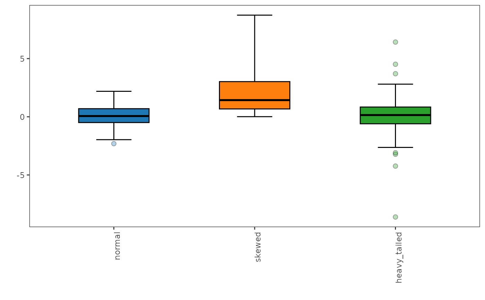

This function generates an adjusted boxplot, which is a robust graphical method for visualizing skewed data distributions. It provides a more accurate representation of the data's spread and skewness compared to traditional boxplots, especially in the presence of outliers or heavy-tailed distributions.
Usage
adjboxplot(
.data,
.plot = TRUE,
xlabels.angle = 90,
xlabels.vjust = 1,
xlabels.hjust = 1,
box.width = 0.5,
notch = FALSE,
notchwidth = 0.5,
staplewidth = 0
)Arguments
- .data
numeric data frame or tibble containing the variables to be plotted.
- .plot
logical value indicating whether to plot the adjusted boxplot (default is TRUE).
- xlabels.angle
numeric value specifying the angle (in degrees) for x-axis labels (default is 90).
- xlabels.vjust
numeric value specifying the vertical justification of x-axis labels (default is 1). A value of 0 means the labels are aligned to the bottom of the viewport, 0.5 means they are vertically centered, and 1 means they are aligned to the top of the viewport.
- xlabels.hjust
numeric value specifying the horizontal justification of x-axis labels (default is 1). A value of 0 means the labels are aligned to the left of the viewport, 0.5 means they are horizontally centered, and 1 means they are aligned to the right of the viewport.
- box.width
numeric value specifying the width of the boxplot (default is 0.5).
- notch
logical value indicating whether to display a notched boxplot (default is FALSE).
- notchwidth
numeric value specifying the width of the notch relative to the body of the boxplot (default is 0.5).
- staplewidth
numeric value specifying the width of staples at the ends of the whiskers.
Value
If .plot = TRUE, returns a ggplot2 object containing the adjusted boxplot.
If .plot = FALSE, returns a data frame with the adjusted boxplot statistics.
Details
The adjusted boxplot is based on the methodology described in:
G. Brys, M. Hubert, and A. Struyf, "A Robust Measure of Skewness," Journal of Computational and Graphical Statistics, 13 (2004)
M. Hubert and E. Vandervieren, "An adjusted boxplot for skewed distributions," Computational Statistics & Data Analysis, 52 (2008)
Examples
# Generate some skewed data
set.seed(123)
data <- data.frame(
normal = rnorm(100),
skewed = rexp(100, rate = 0.5),
heavy_tailed = rt(100, df = 3)
)
# Plot the adjusted boxplot
adjboxplot(data)
#> The default of 'doScale' is FALSE now for stability;
#> set options(mc_doScale_quiet=TRUE) to suppress this (once per session) message

# Retrieve the adjusted boxplot statistics
stats <- adjboxplot(data, .plot = FALSE)